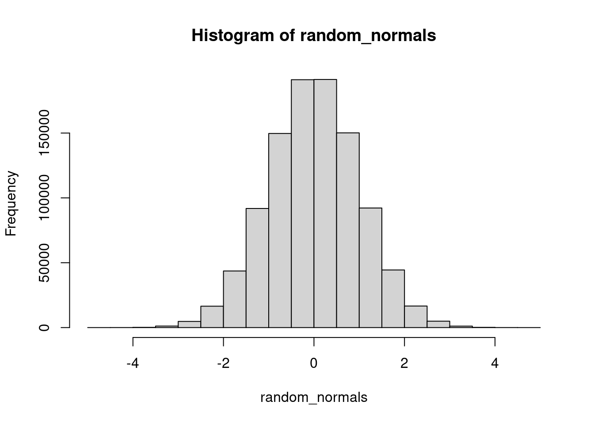
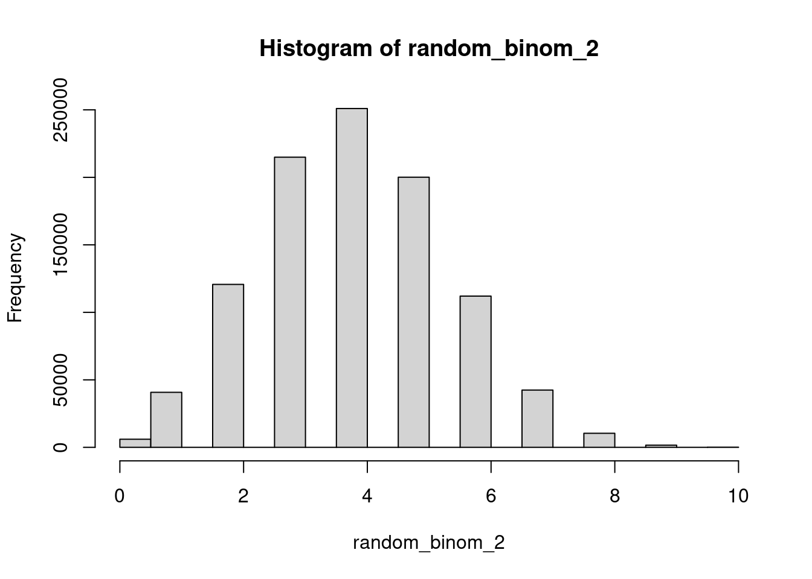

sample(x = 1:10, size = 5)[1] 6 9 2 1 10An increasing amount of political science contributions now include a simulation.
Statistical methods also incorporate simulation:
Up till now, you should have covered:
R basicsIn this module, we will start to work with generating data within R, from thin air, as it were. Doing simulation also strengthens your understanding of Probability (Section @ref{probability}).
sample() function do?runif() stand for?seed?Check if you have an idea of how you might code the following tasks:
We’re going to learn about this today!
sample() functionThe core functions for coding up stochastic data revolves around several key functions, so we will simply review them here.
Suppose you have a vector of values x and from it you want to randomly sample a sample of length size. For this, use the sample function
sample(x = 1:10, size = 5)[1] 6 9 2 1 10There are two subtypes of sampling – with and without replacement.
replace = FALSE) means once an element of x is chosen, it will not be considered again:sample(x = 1:10, size = 10, replace = FALSE) ## no number appears more than once [1] 1 4 2 9 5 6 7 3 10 8replace = TRUE) means that even if an element of x is chosen, it is put back in the pool and may be chosen again.sample(x = 1:10, size = 10, replace = TRUE) ## any number can appear more than once [1] 10 1 7 10 4 1 7 5 2 2It follows then that you cannot sample without replacement a sample that is larger than the pool.
sample(x = 1:10, size = 10, replace = FALSE) [1] 9 6 1 10 8 5 4 7 3 2So far, every element in x has had an equal probability of being chosen. In some application, we want a sampling scheme where some elements are more likely to be chosen than others. The argument prob handles this.
For example, this simulates 20 fair coin tosses (each outcome is equally likely to happen)
sample(c("Head", "Tail"), size = 20, prob = c(.5, .5), replace = TRUE) [1] "Tail" "Head" "Head" "Tail" "Head" "Tail" "Head" "Head" "Tail" "Tail"
[11] "Tail" "Tail" "Tail" "Head" "Head" "Head" "Tail" "Tail" "Tail" "Tail"But this simulates 20 biased coin tosses, where say the probability of Tails is 4 times more likely than the number of Heads
sample(c("Head", "Tail"), size = 20, prob = c(0.2, 0.8), replace = TRUE) [1] "Tail" "Tail" "Tail" "Tail" "Tail" "Tail" "Tail" "Tail" "Tail" "Tail"
[11] "Tail" "Tail" "Tail" "Head" "Head" "Tail" "Tail" "Tail" "Head" "Tail"In tidyverse, there is a convenience function to sample rows randomly: slice_sample()
For example, load the dataset on cars, mtcars, which has 32 observations.
mtcars mpg cyl disp hp drat wt qsec vs am gear carb
Mazda RX4 21.0 6 160.0 110 3.90 2.620 16.46 0 1 4 4
Mazda RX4 Wag 21.0 6 160.0 110 3.90 2.875 17.02 0 1 4 4
Datsun 710 22.8 4 108.0 93 3.85 2.320 18.61 1 1 4 1
Hornet 4 Drive 21.4 6 258.0 110 3.08 3.215 19.44 1 0 3 1
Hornet Sportabout 18.7 8 360.0 175 3.15 3.440 17.02 0 0 3 2
Valiant 18.1 6 225.0 105 2.76 3.460 20.22 1 0 3 1
Duster 360 14.3 8 360.0 245 3.21 3.570 15.84 0 0 3 4
Merc 240D 24.4 4 146.7 62 3.69 3.190 20.00 1 0 4 2
Merc 230 22.8 4 140.8 95 3.92 3.150 22.90 1 0 4 2
Merc 280 19.2 6 167.6 123 3.92 3.440 18.30 1 0 4 4
Merc 280C 17.8 6 167.6 123 3.92 3.440 18.90 1 0 4 4
Merc 450SE 16.4 8 275.8 180 3.07 4.070 17.40 0 0 3 3
Merc 450SL 17.3 8 275.8 180 3.07 3.730 17.60 0 0 3 3
Merc 450SLC 15.2 8 275.8 180 3.07 3.780 18.00 0 0 3 3
Cadillac Fleetwood 10.4 8 472.0 205 2.93 5.250 17.98 0 0 3 4
Lincoln Continental 10.4 8 460.0 215 3.00 5.424 17.82 0 0 3 4
Chrysler Imperial 14.7 8 440.0 230 3.23 5.345 17.42 0 0 3 4
Fiat 128 32.4 4 78.7 66 4.08 2.200 19.47 1 1 4 1
Honda Civic 30.4 4 75.7 52 4.93 1.615 18.52 1 1 4 2
Toyota Corolla 33.9 4 71.1 65 4.22 1.835 19.90 1 1 4 1
Toyota Corona 21.5 4 120.1 97 3.70 2.465 20.01 1 0 3 1
Dodge Challenger 15.5 8 318.0 150 2.76 3.520 16.87 0 0 3 2
AMC Javelin 15.2 8 304.0 150 3.15 3.435 17.30 0 0 3 2
Camaro Z28 13.3 8 350.0 245 3.73 3.840 15.41 0 0 3 4
Pontiac Firebird 19.2 8 400.0 175 3.08 3.845 17.05 0 0 3 2
Fiat X1-9 27.3 4 79.0 66 4.08 1.935 18.90 1 1 4 1
Porsche 914-2 26.0 4 120.3 91 4.43 2.140 16.70 0 1 5 2
Lotus Europa 30.4 4 95.1 113 3.77 1.513 16.90 1 1 5 2
Ford Pantera L 15.8 8 351.0 264 4.22 3.170 14.50 0 1 5 4
Ferrari Dino 19.7 6 145.0 175 3.62 2.770 15.50 0 1 5 6
Maserati Bora 15.0 8 301.0 335 3.54 3.570 14.60 0 1 5 8
Volvo 142E 21.4 4 121.0 109 4.11 2.780 18.60 1 1 4 2sample_n picks a user-specified number of rows from the dataset:
mtcars[sample(1:ncol(mtcars), size=3, replace=F),] mpg cyl disp hp drat wt qsec vs am gear carb
Valiant 18.1 6 225.0 105 2.76 3.460 20.22 1 0 3 1
Mazda RX4 Wag 21.0 6 160.0 110 3.90 2.875 17.02 0 1 4 4
Merc 240D 24.4 4 146.7 62 3.69 3.190 20.00 1 0 4 2slice_sample(mtcars, n=3) mpg cyl disp hp drat wt qsec vs am gear carb
Fiat X1-9 27.3 4 79.0 66 4.08 1.935 18.90 1 1 4 1
Hornet Sportabout 18.7 8 360.0 175 3.15 3.440 17.02 0 0 3 2
Merc 280C 17.8 6 167.6 123 3.92 3.440 18.90 1 0 4 4Sometimes you want a X percent sample of your dataset. In this case use the prop argument to slice_sample
mtcars %>% slice_sample(prop=.5) mpg cyl disp hp drat wt qsec vs am gear carb
Ferrari Dino 19.7 6 145.0 175 3.62 2.770 15.50 0 1 5 6
Lotus Europa 30.4 4 95.1 113 3.77 1.513 16.90 1 1 5 2
Maserati Bora 15.0 8 301.0 335 3.54 3.570 14.60 0 1 5 8
Lincoln Continental 10.4 8 460.0 215 3.00 5.424 17.82 0 0 3 4
Toyota Corolla 33.9 4 71.1 65 4.22 1.835 19.90 1 1 4 1
Merc 450SLC 15.2 8 275.8 180 3.07 3.780 18.00 0 0 3 3
Volvo 142E 21.4 4 121.0 109 4.11 2.780 18.60 1 1 4 2
Merc 280C 17.8 6 167.6 123 3.92 3.440 18.90 1 0 4 4
Cadillac Fleetwood 10.4 8 472.0 205 2.93 5.250 17.98 0 0 3 4
Mazda RX4 Wag 21.0 6 160.0 110 3.90 2.875 17.02 0 1 4 4
Pontiac Firebird 19.2 8 400.0 175 3.08 3.845 17.05 0 0 3 2
Chrysler Imperial 14.7 8 440.0 230 3.23 5.345 17.42 0 0 3 4
Duster 360 14.3 8 360.0 245 3.21 3.570 15.84 0 0 3 4
Datsun 710 22.8 4 108.0 93 3.85 2.320 18.61 1 1 4 1
Fiat 128 32.4 4 78.7 66 4.08 2.200 19.47 1 1 4 1
Toyota Corona 21.5 4 120.1 97 3.70 2.465 20.01 1 0 3 1A common task in statistics is to generate “bootstrap” samples of your data. This involves sampling a new dataset of equivalent size (n rows) but with replacement (so some observations are dropped; others might appear 2 or 3 times). You can do this with slice_sample as well
mtcars %>% slice_sample(prop=1, replace=T) mpg cyl disp hp drat wt qsec vs am gear carb
Hornet Sportabout 18.7 8 360.0 175 3.15 3.440 17.02 0 0 3 2
Valiant 18.1 6 225.0 105 2.76 3.460 20.22 1 0 3 1
Mazda RX4...3 21.0 6 160.0 110 3.90 2.620 16.46 0 1 4 4
Merc 280...4 19.2 6 167.6 123 3.92 3.440 18.30 1 0 4 4
Lincoln Continental 10.4 8 460.0 215 3.00 5.424 17.82 0 0 3 4
Fiat 128...6 32.4 4 78.7 66 4.08 2.200 19.47 1 1 4 1
Volvo 142E 21.4 4 121.0 109 4.11 2.780 18.60 1 1 4 2
Porsche 914-2...8 26.0 4 120.3 91 4.43 2.140 16.70 0 1 5 2
AMC Javelin...9 15.2 8 304.0 150 3.15 3.435 17.30 0 0 3 2
Chrysler Imperial...10 14.7 8 440.0 230 3.23 5.345 17.42 0 0 3 4
Honda Civic 30.4 4 75.7 52 4.93 1.615 18.52 1 1 4 2
Mazda RX4 Wag 21.0 6 160.0 110 3.90 2.875 17.02 0 1 4 4
Dodge Challenger 15.5 8 318.0 150 2.76 3.520 16.87 0 0 3 2
Duster 360 14.3 8 360.0 245 3.21 3.570 15.84 0 0 3 4
Porsche 914-2...15 26.0 4 120.3 91 4.43 2.140 16.70 0 1 5 2
Ferrari Dino 19.7 6 145.0 175 3.62 2.770 15.50 0 1 5 6
Merc 450SL...17 17.3 8 275.8 180 3.07 3.730 17.60 0 0 3 3
Fiat 128...18 32.4 4 78.7 66 4.08 2.200 19.47 1 1 4 1
Merc 450SL...19 17.3 8 275.8 180 3.07 3.730 17.60 0 0 3 3
Porsche 914-2...20 26.0 4 120.3 91 4.43 2.140 16.70 0 1 5 2
AMC Javelin...21 15.2 8 304.0 150 3.15 3.435 17.30 0 0 3 2
Mazda RX4...22 21.0 6 160.0 110 3.90 2.620 16.46 0 1 4 4
Chrysler Imperial...23 14.7 8 440.0 230 3.23 5.345 17.42 0 0 3 4
Datsun 710 22.8 4 108.0 93 3.85 2.320 18.61 1 1 4 1
Mazda RX4...25 21.0 6 160.0 110 3.90 2.620 16.46 0 1 4 4
Chrysler Imperial...26 14.7 8 440.0 230 3.23 5.345 17.42 0 0 3 4
Merc 230 22.8 4 140.8 95 3.92 3.150 22.90 1 0 4 2
Ford Pantera L 15.8 8 351.0 264 4.22 3.170 14.50 0 1 5 4
Merc 280...29 19.2 6 167.6 123 3.92 3.440 18.30 1 0 4 4
Toyota Corona...30 21.5 4 120.1 97 3.70 2.465 20.01 1 0 3 1
Toyota Corona...31 21.5 4 120.1 97 3.70 2.465 20.01 1 0 3 1
Maserati Bora 15.0 8 301.0 335 3.54 3.570 14.60 0 1 5 8As a side-note, these functions have very practical uses for any type of data analysis:
head() all the same time and looking over the first few rows might lead you to ignore any issues that end up in the bottom for whatever reason.sample_n / sample_frac line of code in the beginning). While three seconds may not sound like much, they accumulate and eat up time.rbinom()rbinom builds upon sample as a tool to help you answer the question – what is the total number of successes I would get if I sampled a binary (Bernoulli) result from a test with size number of trials each, with a event-wise probability of prob. The first argument n asks me how many such numbers I want.
For example, I want to know how many Heads I would get if I flipped a fair coin 100 times.
rbinom(n = 100, size = 1, prob = 0.1) [1] 0 0 0 0 0 0 0 0 0 0 0 0 1 0 0 1 0 0 0 0 0 0 0 0 0 0 0 1 0 0 0 1 1 0 0 0 0
[38] 0 0 0 0 0 0 0 0 0 0 0 0 0 0 0 0 0 1 0 0 0 0 0 0 0 0 0 0 0 0 0 0 0 0 0 0 0
[75] 0 0 0 0 0 0 0 0 0 0 0 0 0 0 0 0 1 0 0 0 0 0 0 0 1 0Now imagine this I wanted to do this experiment 10 times, which would require I flip the coin 10 x 100 = 1000 times! Helpfully, we can do this in one line
rbinom(n = 10, size = 100, prob = 0.5) [1] 46 41 50 50 59 53 57 49 51 56runif()runif also simulates a stochastic scheme where each event has equal probability of getting chosen like sample, but is a continuous rather than discrete system. We will cover this more in the next math module.
The intuition to emphasize here is that one can generate potentially infinite amounts (size n) of noise that is a essentially random
runif(n = 5, min=0, max=1)[1] 0.01051054 0.57140770 0.35731914 0.36474572 0.28763365rnorm()rnorm is also a continuous distribution, but draws from a Normal distribution – perhaps the most important distribution in statistics. It runs the same way as runif
rnorm(n=5, mean=0, sd=2)[1] 1.9375519 -0.9540334 -0.7534709 -1.4081971 3.5492358To better visualize the difference between the output of runif and rnorm, let’s generate lots of each and plot a histogram.
from_runif <- runif(n = 1000)
from_rnorm <- rnorm(n = 1000)
par(mfrow = c(1, 2)) ## base-R parameter for two plots at once
hist(from_runif)
hist(from_rnorm)
Each distribution can do more than generate random numbers (the prefix r). We can compute the cumulative probability by the function pbinom(), punif(), and pnorm(). Also the density – the value of the PDF – by dbinom(), dunif() and dnorm().
random_normals <- rnorm(n=1000000, mean=0, sd=1)
hist(random_normals)
random_binom_2 <- qbinom(runif(n=1000000), size=10, prob=.4)
hist(random_binom_2)
set.seed()R doesn’t have the ability to generate truly random numbers! Random numbers are actually very hard to generate. (Think: flipping a coin –> can be perfectly predicted if I know wind speed, the angle the coin is flipped, etc.). Some people use random noise in the atmosphere or random behavior in quantum systems to generate “truly” (?) random numbers. Conversely, R uses deterministic algorithms which take as an input a “seed” and which then perform a series of operations to generate a sequence of random-seeming numbers (that is, numbers whose sequence is sufficiently hard to predict).
Let’s think about this another way. Sampling is a stochastic process, so every time you run sample() or runif() you are bound to get a different output (because different random seeds are used). This is intentional in some cases but you might want to avoid it in others. For example, you might want to diagnose a coding discrepancy by setting the random number generator to give the same number each time. To do this, use the function set.seed().
In the function goes any number. When you run a sample function in the same command as a preceding set.seed(), the sampling function will always give you the same sequence of numbers. In a sense, the sampler is no longer random (in the sense of unpredictable to use; remember: it never was “truly” random in the first place)
set.seed(02138)
runif(n = 10) [1] 0.51236144 0.61530551 0.37451441 0.43541258 0.21166530 0.17812129
[7] 0.04420775 0.45567854 0.88718264 0.06970056The random number generator should give you the exact same sequence of numbers if you precede the function by the same seed,
set.seed(02138)
runif(n = 10) [1] 0.51236144 0.61530551 0.37451441 0.43541258 0.21166530 0.17812129
[7] 0.04420775 0.45567854 0.88718264 0.06970056We can use repeated, independent draws from a random process in order to approximate its mean (or variance, or higher-order moments). The intuition comes from the law of large numbers. As we obtain repeated independent and identically distributed realizations from a random variable and take their average, this average should get closer and closer to the true expected value. The longer we run the simulation, the better the approximation.
Crucially, we can do this for essentially any random process that we can repeatedly obtain independent draws from. All we need to do is be able to implement the process in code. This can often be easier than trying to calculate an expectation analytically.
Consider the problem of calculating the expectation of the maximum of two independent 20-sided die rolls. We could construct a function that took the maximum of two independent draws from a 1-20 vector. Doing this a large number of times and taking the average allows us to approximate the true expectation of this new random variable without having to do any math!
radvantage <- function(sides=20, k=2){
return(max(sample.int(sides, k, replace = T)))
}
# Take the mean of 100,000 rolls with "advantage"
set.seed(60639)
mean(map_vec(1:1e5, radvantage))[1] 33379Next, consider the “birthday problem” or the probability that among \(k\) randomly chosen people, at least two people will have the same birthday. Recall that the expected value of an indicator random variable is equal to the probability that the indicator is equal to \(1\) (so we can calculate probabilities using Monte Carlo by getting draws from an indicator variable for the event of interest).
We could construct a function that simulates one hypothetical set of \(k\) people. Assume no leap years and uniformly distributed birthdays.
birthday <- function(k){
# For each person, sample a birthday
bdays <- map_vec(1:k, function(x) sample.int(365, 1))
# If any birthdays are duplicated, the length of unique(x) will be shorter than the length of x
return(as.numeric(length(bdays) != length(unique(bdays))))
}
set.seed(60639)
# For a room of 23 people
mean(map_vec(1:1e4, function(x) birthday(23)))[1] 0.5156# For a room of 90 people
mean(map_vec(1:1e4, function(x) birthday(60)))[1] 0.9953Notably, it is still important that the expectation of the random variable exists. Consider the Cauchy distribution which has no finite mean. Suppose I take a large number of independent draws from this distribution and average them. I get wildly different results across different runs!
set.seed(60639)
mean(rcauchy(1e5)) # Average of 100,000 draws from a Cauchy(0, 1)[1] 7.696414mean(rcauchy(1e5)) # Another average of 100,000 draws from a Cauchy(0, 1) -- wildly different resutl![1] 0.8749143Monte Carlo simulations are frequently used to analyze expected outcomes in casino games and calculate the “house edge” or the percent of a player’s winnings that they can expect to lose on a particular bet. One casino game that is known to have a very low house edge is Baccarat. In this exercise, you will implement a function that simulates a game of Baccarat. Using this function, you will calculate the expected value for each of the three types of bets in the game. You will then simulate how these expected values might change if the casino set different payouts for some of the bets.
First, a brief primer on baccarat. Baccarat is a table game in which two hands of playing cards – the “player” hand and the “banker” hand – are drawn and then compared against one another. The hand containing the highest score wins the round. The most common version played in modern casinos is called “punto banco” baccarat and essentially plays itself according to a fixed set of card drawing rules. The names “player” and “banker” are simply labels for each of the two hands.
Before each round of play, bettors can place one of three bets: that the “player” hand will win, that the “banker” hand will win, or that the hands will “tie” and have the same score.
Then, the round begins. The game is played by drawing cards from a “shoe” of cards containing multiple decks of standard playing cards (typically six or eight). The shoe is shuffled to randomize the order. Two cards are dealt to the player hand and two cards are dealt to the banker hand. We will ignore common casino practice of “burning” some cards from the top of the deck to discourage card counting as this does not impact the simulation.
The player hand may then be dealt a third card depending on the value of the initial two cards.
The banker hand may also receive a third card depending on the value of the banker’s initial two cards as well as the value of the player’s third card if they drew one. The rules for determining whether either hand receives a third card are below. After all cards are dealt, the value of the hands is calculated.
Face cards and 10s are worth zero points, aces are worth one point, and all other cards are worth their printed number (2-9 points). The value of a hand is the ones digit of the sum of the point values of the cards in that hand. So a hand consisting of a 2 and a 5 would be worth 7 points, while a hand consisting of a 4, 5 and 3 would be worth 2 points (\(4 + 5 + 3 = 12, 12 \text{ mod } 10 = 2\)). In other words, hands are valued at their point sum modulo 10.
The hand with the highest value is declared the winner. If the hands are equally valued, the result is a “tie”
The rules for determining whether the player or banker hand receives a third card in a given round are somewhat complex:
First, if either the player or the banker has a hand valued at 8 or 9, then no third cards are drawn, the round ends, and a winner is declared based on the value of the initial two-card hands.
Second, if neither hand is an 8 or 9, the game decides whether to give the “player hand” a third card. If the player’s initial hand value is 5 or less, then they are given a third card. If the player’s initial hand value is 6 or 7, they “stand”
Third, the game decides whether to give the “banker hand” a third card. If the player did not receive a third card, the banker acts by the same rule as the player (draw if 5 or less, stand if 6 or 7). If the player did receive a third card, then the decision to draw depends on both the value of the banker’s current hand and the value of the third card drawn by the player.
The Wikipedia page for Baccarat has a nice table that summarizes the “hit/stand” decision for the banker.
After the cards are dealt and the winner determined for the round, bets are paid.
Implement, in code, a function that simulates a single round of play (ignore the betting process for now). Assume the casino is playing with a shoe of six decks of standard playing cards and that this shoe is refreshed after every round.
Below is an outline for the sorts of functions you should implement to break this problem down into smaller component parts along with some hints.
# This function should take as input some number of decks and generate a shoe of cards in the form of a vector
# HINT: You don't need to store the actual cards, just their values
# HINT 2: Read the documentation for the 'rep' function
gen_deck <- function(){
}# This function should take as input some vector that represents a hand of cards and return its value
# HINT: In R, the modulo operator is %%
value_hand <- function(){
}# This function should take as input the banker's and the player's hands and return the outcome of the round
determine_winner <- function(){
}# This is your main function. It should return (at a minimum) the outcome of the round of play
# HINT: Write out each phase of the round in plain language in the comments. Then try to implement that phase in code.
# HINT 2: You'll likely need to use a lot of conditional statements to implement the drawing rules
play_round <- function(){
}Now implement a function that takes as input a bettor’s chosen outcome and their wager. The function should then play a round of baccarat and return the amount that the bettor receives from the casino. There are a few equally valid ways to implement “winnings.” For the purposes of this problem, you should have the function return \(0\) if the player loses their entire wager.
# This function should take as input a choice and a wager. You can choose to have it wrap `play_round()` or have the call to `play_round()` passed as an argument. Either way, it should return a "payoff" based on the choice the bettor selects and the (random) outcome of the round.
standard_payoff <- function(){
}Using a Monte Carlo simulation, calculate the expected return of a wager of 100 dollars on the “player” bet. In other words, if a bettor pays \(100\) to bet on “player”, what is the amount that they expect to win. Set your seed once to \(60639\) and run it for 300,000 iterations (try running for fewer iterations as you’re testing, but you’ll need a decent number of iterations to get the desired numerical precision)
Calculate the “house edge” of the “player” bet. The house edge is the difference between a bettor’s amount wagered and their expected return, divided by the amount wagered. In other words, it’s the amount that a casino expects to keep of a player’s bet.
\[\text{HouseEdge} = \frac{\text{AmountWagered} - \text{ExpectedReturn}}{\text{AmountWagered}}\]
set.seed(60639) # Set the seed
# Simulation code hereUse a Monte Carlo simulation to calculate the expected return of a wager of 100 dollars on the “banker” bet. Calculate the “house edge” of the “banker” bet. Set the seed to \(60640\) and run for 300,000 iterations.
set.seed(60640) # Set the seed
# Simulation code hereWhich bet has the lower house edge?
One odd feature of Baccarat is that the “banker” bets pay 19-to-20 rather than the 1-to-1 for player bets. Using a Monte Carlo simulation, show why casinos don’t pay 1-to-1 on the banker (calculate the house edge). You’ll need to write a new payoff function to handle the alternative payout structure. Set the seed to \(60641\) and run for 300,000 iterations.
set.seed(60641) # Set the seed
# Simulation code hereA new version of Baccarat that has become popular in some areas called “EZ-Baccarat” purports to solve the problem you identified in Part 5 while still paying “banker” bets at 1-to-1. It does so by having any round where the banker wins with a hand of 3 cards that totals 7 points be a “push” (bettors keep their wagers but don’t win any additional money) rather than a “win” for the banker hand.
Show, using a Monte Carlo simulation, how this payout structure retains the house edge on “banker” bets. You may have to modify your simulation functions to return more information about the outcome of the round in order to implement a new payoff function.
See the state regulatory documents for more info about this version of the game.
set.seed(60642) # Set the seedModule originally written by Connor Jerzak and Shiro Kuriwaki↩︎
Axelrod, Robert. 1997. “The Dissemination of Culture.” Journal of Conflict Resolution 41(2): 203–26.↩︎
Chen, Jowei, and Jonathan Rodden. “Unintentional Gerrymandering: Political Geography and Electoral Bias in Legislatures. Quarterly Journal of Political Science, 8:239-269”↩︎
King, Gary, et al. “Analyzing Incomplete Political Science Data: An Alternative Algorithm for Multiple Imputation”. American Political Science Review, 95: 49-69.↩︎
James Honaker, Gary King, Matthew Blackwell (2011). Amelia II: A Program for Missing Data. Journal of Statistical Software, 45(7), 1-47.↩︎
Special thanks to Shiro Kuriwaki for developing the original version of this tutorial↩︎
Special thanks to Shiro Kuriwaki and Yon Soo Park for developing the original module↩︎
Module originally written by Shiro Kuriwaki, Connor Jerzak, and Yon Soo Park↩︎
Module originally written by Connor Jerzak and Shiro Kuriwaki↩︎
Module originally written by Connor Jerzak and Shiro Kuriwaki↩︎
Module originally written by Connor Jerzak and Shiro Kuriwaki↩︎
Module originally written by Connor Jerzak and Shiro Kuriwaki↩︎